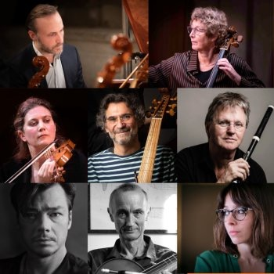

Harpsichordist and continuo player Jing Tang is based in Hamburg, where she is currently pursuing the Konzertexamen in harpsichord at the Hochschule für Musik und Theater Hamburg under Menno van Delft. Her work centres on seventeenth- and eighteenth-century keyboard music, with particular interests in German repertoire, historical instruments, and the French clavecin tradition.
Tang began playing the piano at the age of seven and, at twelve, entered the Middle School affiliated with the Central Conservatory of Music in Beijing, where she studied with Xinning Zhang. She later continued her piano studies at the Central Conservatory with Yuan Sheng, receiving several scholarships and prizes during her years there. It was during her undergraduate studies that a growing interest in early music led her to the harpsichord and to studies with Chinese harpsichordist Yushan Jiang, gradually shifting the focus of her musical work towards historical performance practice.
In 2022, Tang moved to Hamburg to study harpsichord with Menno van Delft at the Hochschule für Musik und Theater Hamburg. After completing her Master of Music in 2024, she continued with the Konzertexamen programme under his guidance. Her training in Hamburg has also included basso continuo with Isolde Kittel-Zerer.
Tang has performed as a soloist in both Europe and China. In June 2026, she gave a recital at Hamburg’s Museum für Kunst und Gewerbe, performing on the museum’s original 1728 Christian Zell harpsichord. The following month, she performed J. S. Bach’s Fifth Brandenburg Concerto at the Mendelssohn-Saal of the Hochschule für Musik und Theater Hamburg in collaboration with violinist Rachel Harris.
Her connection with China’s musical life has continued alongside her work in Europe. In 2024, Tang returned to the Central Conservatory of Music for a recital exploring composers associated with Hamburg, with works by Heinrich Scheidemann, Johann Adam Reincken, Georg Philipp Telemann and George Frideric Handel. Alongside the recital, she gave a lecture on Hamburg’s harpsichord tradition and its historical instruments. In 2022, she also appeared with Yushan Jiang in a two-harpsichord concert at Beijing’s Forbidden City Concert Hall.
Alongside her solo work, Tang is active as a continuo player and chamber musician. She has participated in staged productions of Monteverdi’s L’Orfeo (2024) and Hasse’s Artaserse (2026) at the Hochschule für Musik und Theater Hamburg, as well as other chamber music and ensemble projects.
A particular focus of Tang’s current artistic work is the relationship between repertoire and historical instruments. Alongside her engagement with German keyboard music of the seventeenth and eighteenth centuries, she has developed a special interest in seventeenth-century French repertoire and the Bauyn Manuscript. She plays a harpsichord built by David Rubio in 1980, modelled after the Vaudry instrument preserved at the Victoria and Albert Museum in London.
Jing Tang
Die Cembalistin und Continuospielerin Jing Tang lebt in Hamburg und absolviert derzeit ihr Konzertexamen im Fach Cembalo an der Hochschule für Musik und Theater Hamburg bei Menno van Delft. Im Mittelpunkt ihrer künstlerischen Arbeit steht die Tastenmusik des 17. und 18. Jahrhunderts, mit besonderem Interesse am deutschen Repertoire, an historischen Instrumenten und an der französischen Clavecin-Tradition.
Tang begann im Alter von sieben Jahren mit dem Klavierspiel. Mit zwölf Jahren wurde sie an die Mittelschule des Central Conservatory of Music in Peking aufgenommen, wo sie bei Xinning Zhang studierte. Anschließend setzte sie ihr Klavierstudium am Central Conservatory bei Yuan Sheng fort und erhielt während ihrer Studienzeit mehrere Stipendien und Auszeichnungen. Im Laufe ihres Bachelorstudiums entwickelte sie ein zunehmendes Interesse an Alter Musik und wandte sich dem Cembalo zu. Sie studierte bei dem chinesischen Cembalisten Yushan Jiang und verlagerte ihren musikalischen Schwerpunkt zunehmend auf die historische Aufführungspraxis.
2022 zog Tang nach Hamburg, um an der Hochschule für Musik und Theater Hamburg bei Menno van Delft Cembalo zu studieren. Nach Abschluss ihres Masterstudiums im Jahr 2024 setzte sie ihre Ausbildung im Konzertexamen bei ihm fort. Darüber hinaus studierte sie Generalbass bei Isolde Kittel-Zerer.
Als Solistin ist Tang sowohl in Europa als auch in China aufgetreten. Im Juni 2026 gab sie ein Recital im Hamburger Museum für Kunst und Gewerbe auf dem dort erhaltenen originalen Christian-Zell-Cembalo von 1728. Im darauffolgenden Monat spielte sie J. S. Bachs Fünftes Brandenburgisches Konzert im Mendelssohn-Saal der Hochschule für Musik und Theater Hamburg in Zusammenarbeit mit der Violinistin Rachel Harris.
Neben ihrer künstlerischen Tätigkeit in Europa pflegt Tang weiterhin eine enge Verbindung zum Musikleben in China. 2024 kehrte sie für ein Recital an das Central Conservatory of Music zurück, das Komponisten mit Bezug zu Hamburg gewidmet war und Werke von Heinrich Scheidemann, Johann Adam Reincken, Georg Philipp Telemann und Georg Friedrich Händel umfasste. Begleitend zum Konzert hielt sie einen Vortrag über die Hamburger Cembalotradition und ihre historischen Instrumente. Bereits 2022 war sie gemeinsam mit Yushan Jiang in einem Konzert für zwei Cembali in der Forbidden City Concert Hall in Peking zu hören.
Neben ihrer solistischen Tätigkeit ist Tang als Continuospielerin und Kammermusikerin aktiv. An der Hochschule für Musik und Theater Hamburg wirkte sie unter anderem als Continuospielerin bei szenischen Produktionen von Monteverdis L’Orfeo (2024) und Hasses Artaserse (2026) sowie bei weiteren Kammermusik- und Ensembleprojekten mit.
Ein besonderer Schwerpunkt ihrer gegenwärtigen künstlerischen Arbeit liegt auf der Verbindung zwischen Repertoire und historischen Instrumenten. Neben ihrer Beschäftigung mit deutscher Tastenmusik des 17. und 18. Jahrhunderts gilt ihr besonderes Interesse dem französischen Repertoire des 17. Jahrhunderts und dem Bauyn-Manuskript. Sie spielt auf einem 1980 von David Rubio gebauten Cembalo nach dem Vorbild des Vaudry-Instruments im Victoria and Albert Museum in London.
唐靖
羽管键琴演奏家、通奏低音演奏家唐靖现居德国汉堡，目前师从Menno van Delft，于汉堡音乐与戏剧学院攻读羽管键琴最高演奏家文凭（Konzertexamen）。她的艺术实践主要围绕17至18世纪键盘音乐展开，尤其关注德国键盘音乐、历史乐器及法国羽管键琴传统。
Клавесинистка и исполнительница basso continuo Цзин Тан живёт в Гамбурге и продолжает своё обучение в Высшей школе музыки и театра Гамбурга, где совершенствует мастерство игры на клавесине под руководством Менно ван Делфта в рамках программы Konzertexamen. В центре её творческих интересов — клавишная музыка XVII и XVIII веков, прежде всего немецкий репертуар, исторические клавишные инструменты и французская клавесинная традиция.
Цзин Тан начала заниматься фортепиано в возрасте семи лет. В двенадцать лет она поступила в среднюю школу при Центральной консерватории в Пекине, где училась у Чжан Синьнин. Позднее она продолжила обучение в Центральной консерватории в классе Шэн Юаня и за годы учёбы была удостоена нескольких стипендий и профессиональных наград. Во время обучения в бакалавриате её всё больше стала привлекать старинная музыка. Она начала заниматься на клавесине у китайского клавесиниста Цзян Юйшаня, постепенно сосредоточив свою музыкальную деятельность на историческом исполнительстве.
В 2022 году Цзин Тан переехала в Гамбург, где продолжила обучение игре на клавесине у Менно ван Делфта в Высшей школе музыки и театра Гамбурга. После окончания магистратуры в 2024 году она продолжила обучение у него по программе Konzertexamen. Искусству basso continuo она также обучалась у Изольде Киттель-Церер.
Цзин Тан выступает с сольными программами как в Европе, так и в Китае. В июне 2026 года она дала сольный концерт в гамбургском Музее искусств и ремёсел, где играла на оригинальном клавесине Кристиана Целля 1728 года из коллекции музея. В следующем месяце она исполнила Пятый Бранденбургский концерт И. С. Баха в зале Мендельсона Высшей школы музыки и театра Гамбурга в сотрудничестве со скрипачкой Рэйчел Харрис.
Наряду с музыкальной деятельностью в Европе Цзин Тан сохраняет тесную связь с музыкальной жизнью Китая. В 2024 году она вернулась в Центральную консерваторию в Пекине с сольной программой, посвящённой композиторам, связанным с Гамбургом, в которую вошли произведения Генриха Шайдемана, Иоганна Адама Рейнкена, Георга Филиппа Телемана и Георга Фридриха Генделя. Концерт сопровождался её лекцией о гамбургской клавесинной традиции и исторических инструментах города. В 2022 году она также выступила вместе с клавесинистом Цзян Юйшанем в Пекине с программой для двух клавесинов.
Помимо сольной деятельности, Цзин Тан выступает как исполнительница basso continuo и камерный музыкант. Она принимала участие в постановках опер Монтеверди «Орфей» (2024) и Хассе «Артаксеркс» (2026) в Высшей школе музыки и театра Гамбурга, а также в других камерных и ансамблевых проектах.
Особое место в нынешних творческих интересах Цзин Тан занимает связь между репертуаром и историческими инструментами. Наряду с немецкой клавирной музыкой XVII и XVIII веков её особенно привлекают французский клавесинный репертуар XVII века и манускрипт Бoэна (Bauyn Manuscript). Она играет на клавесине, изготовленном Дэвидом Рубио в 1980 году по образцу инструмента Водри (Vaudry), хранящегося в Музее Виктории и Альберта в Лондоне.
Works
François Couperin in A
Pachelbel Aria and 5 Variations in e minor
Thomas Augustine Arne: Sonate 4 in d minor
György Ligeti: Hungarian Rock (1978)
Concerts & Events
25Oct 2026

EARLY MUSIC ACADEMY · CHAMBER MUSIC
La Nuit des Étudiants — Vannes Early Music Academy